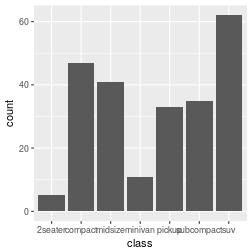
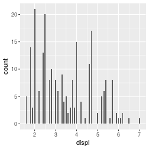
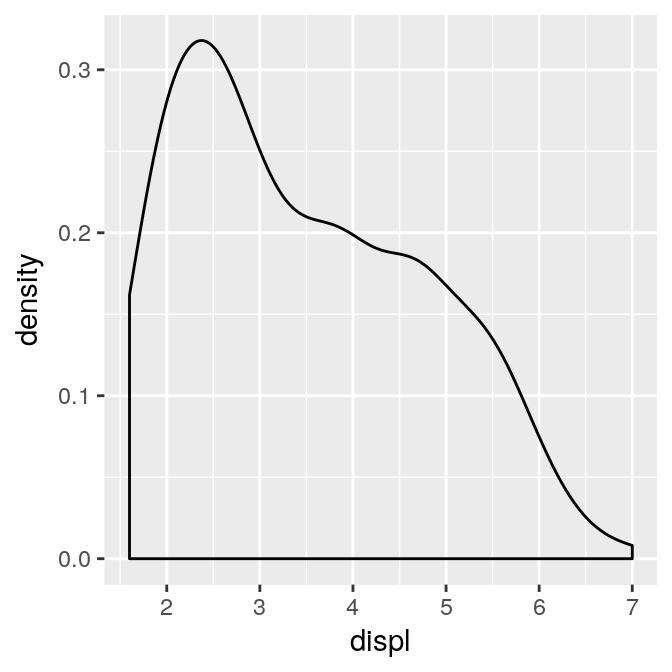
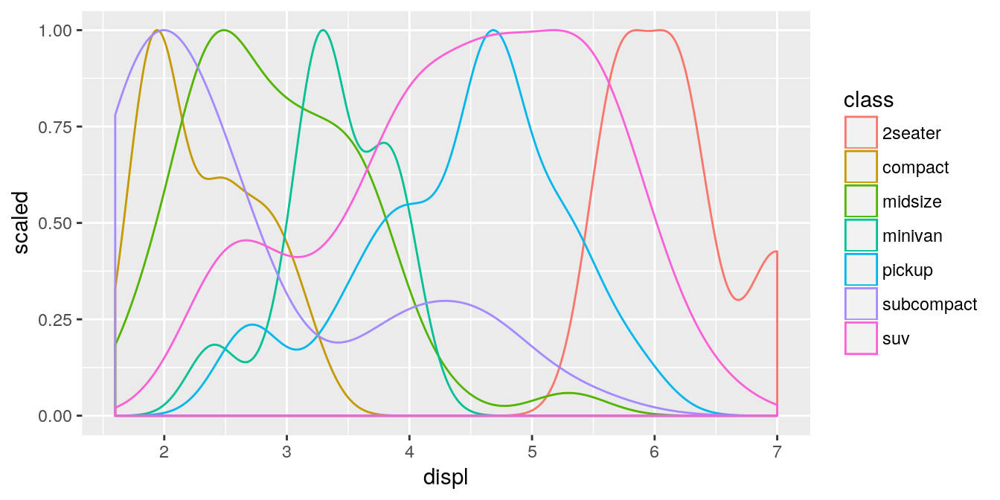
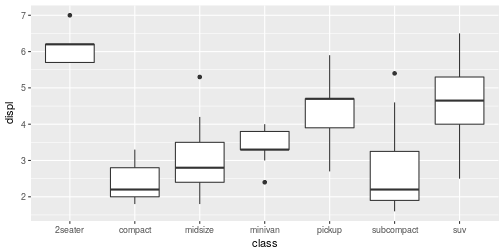
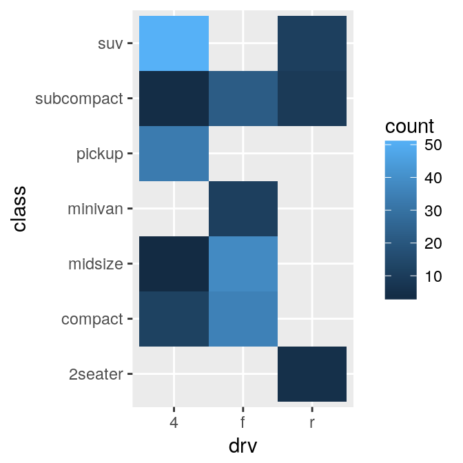
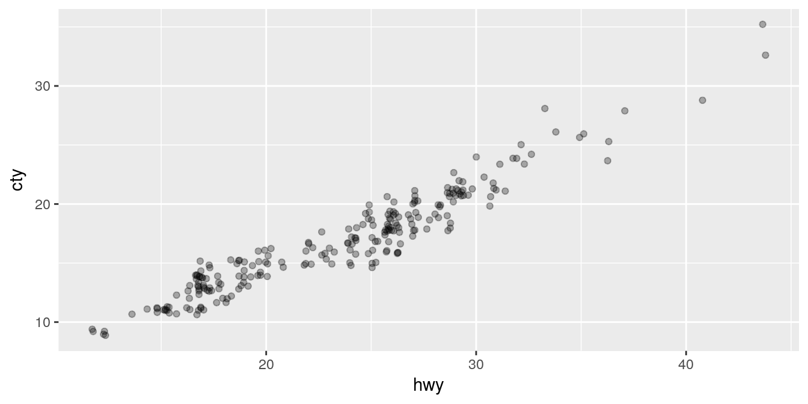

Understand your data
Generate questions
Search for answers
Rinse and repeat
Variation
Covariation
???
Tabular data
.pull-left[
ggplot(data = mpg) +
geom_bar(
mapping = aes(x = class)
) ]
.pull-right[
mpg %>%
count(class)## # A tibble: 7 x 2
## class n
## <chr> <int>
## 1 2seater 5
## 2 compact 47
## 3 midsize 41
## 4 minivan 11
## 5 pickup 33
## 6 subcompact 35
## 7 suv 62]
.pull-left[
ggplot(data = mpg) +
geom_histogram(
mapping = aes(x = displ),
binwidth = 0.05
) ]
.pull-right[
ggplot(data = mpg) +
geom_density(
mapping = aes(x = displ)
) ]
ggplot(data = mpg) +
geom_density(
mapping = aes(x = displ, y = ..scaled.., color = class),
)
ggplot(data = mpg) +
geom_boxplot(
mapping = aes(x = class, y = displ),
)
.pull-left[
ggplot(data = mpg) +
geom_bin2d(
mapping = aes(x = drv, y = class),
) ]
.pull-right[
mpg %>%
count(drv, class)## # A tibble: 12 x 3
## drv class n
## <chr> <chr> <int>
## 1 4 compact 12
## 2 4 midsize 3
## 3 4 pickup 33
## 4 4 subcompact 4
## 5 4 suv 51
## 6 f compact 35
## 7 f midsize 38
## 8 f minivan 11
## 9 f subcompact 22
## 10 r 2seater 5
## 11 r subcompact 9
## 12 r suv 11]
ggplot(data = mpg) +
geom_jitter(
mapping = aes(x = hwy, y = cty),
alpha = 0.3
)
class: inverse
???
r4ds, chapter 13
library(nycflights13)
flights %>%
select(year, month, day, carrier) %>%
left_join(airlines)## Joining, by = "carrier"## # A tibble: 336,776 x 5
## year month day carrier name
## <int> <int> <int> <chr> <chr>
## 1 2013 1 1 UA United Air Lines Inc.
## 2 2013 1 1 UA United Air Lines Inc.
## 3 2013 1 1 AA American Airlines Inc.
## 4 2013 1 1 B6 JetBlue Airways
## 5 2013 1 1 DL Delta Air Lines Inc.
## 6 2013 1 1 UA United Air Lines Inc.
## 7 2013 1 1 B6 JetBlue Airways
## 8 2013 1 1 EV ExpressJet Airlines Inc.
## 9 2013 1 1 B6 JetBlue Airways
## 10 2013 1 1 AA American Airlines Inc.
## # ... with 336,766 more rowsr4ds, chapter 25
flights %>%
nest(-month) %>%
arrange(month)## # A tibble: 12 x 2
## month data
## <int> <list>
## 1 1 <tibble [27,004 × 18]>
## 2 2 <tibble [24,951 × 18]>
## 3 3 <tibble [28,834 × 18]>
## 4 4 <tibble [28,330 × 18]>
## 5 5 <tibble [28,796 × 18]>
## 6 6 <tibble [28,243 × 18]>
## 7 7 <tibble [29,425 × 18]>
## 8 8 <tibble [29,327 × 18]>
## 9 9 <tibble [27,574 × 18]>
## 10 10 <tibble [28,889 × 18]>
## 11 11 <tibble [27,268 × 18]>
## 12 12 <tibble [28,135 × 18]>Symbolic link to data directory: - Linux and OS X: file.symlink() - Windows: Sys.junction()
R markdown: http://rmarkdown.rstudio.com/gallery.html
Literature:
Copyright © 2017 Kirill Müller. Licensed under CC BY-NC 4.0.